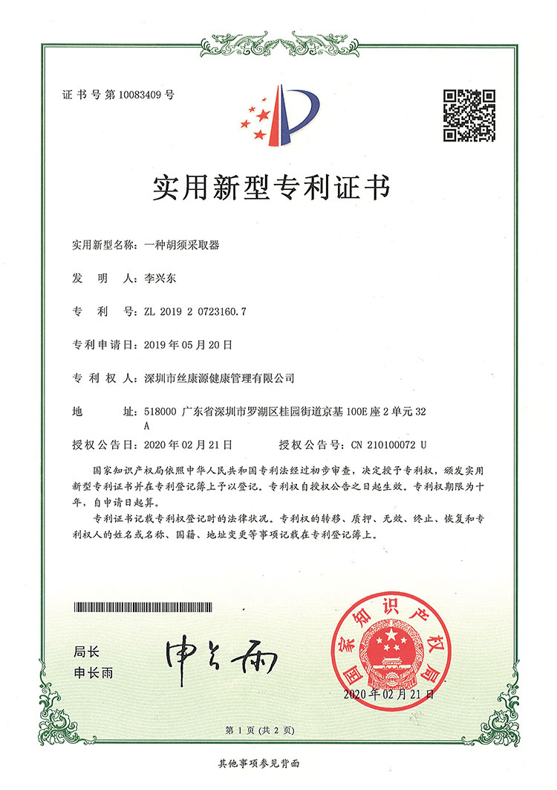
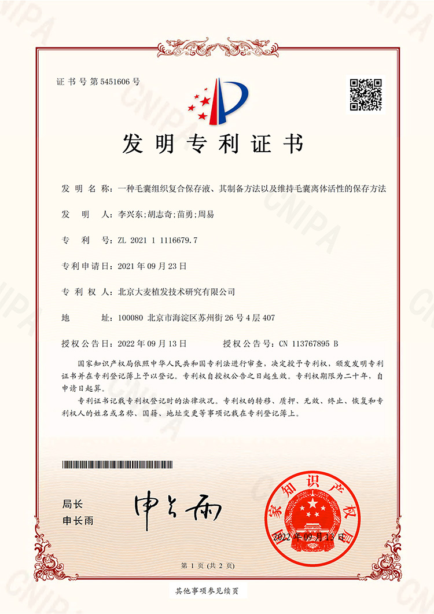
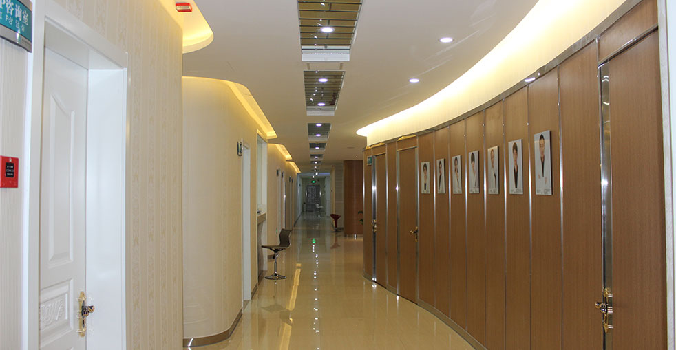

我們革命性的專利技術
微針植髮又稱種植筆技術，透過將單個毛囊放入種植筆的空心尖端，然後直接將毛囊推入預先設計好的頭皮接受區。種植筆可360°旋轉以配合自然頭髮生長方向，大幅減少創傷和患者疼痛，同時避免二次毛囊損傷。
0.6-1.0mm - 小1/3
快速恢復
快速恢復正常
提高20-30%
自然方向
為每種需求提供完整解決方案
毛囊單位摘取術（FUE）是一種微創植髮技術，使用專用工具從捐贈區單獨摘取毛囊。我們先進的FUE配合微針種植，確保精準放置和自然效果，疤痕最小。
毛囊單位移植術（FUT）涉及從捐贈區切除一條組織，然後將其分解成單個毛囊單位進行移植。雖然仍然有效，但我們的FUT手術結合現代技術，實現更好的癒合和效果。
我們創新的不剃髮技術讓您無需剃頭即可進行植髮。這一隱蔽選擇非常適合那些希望在整個治療過程中保持外觀的人。
看看我們的技術如何比較
14項專利代表多年的創新和研究

用於精準毛囊放置的創新裝置，具備360°旋轉功能。

智慧毛囊分配機制，實現最佳頭髮密度和生長。

無創毛囊摘取裝置，配備頭皮穩定技術。

用於安全有效摘取臉部毛囊的專用工具。

精密設計的鑷子，用於精細的毛囊處理。

精準深度調整系統，實現一致的種植效果。

先進的保護設計，防止植髮過程中的二次毛囊損傷。

超銳利刀片，實現最小創傷切口和更快恢復。

無創摘取技術，保存毛囊活力。

最佳毛囊儲存解決方案，保持最大活力。

精準毛囊分離，不損傷周圍組織。

角度放置系統，配合自然頭髮生長模式。

智慧間距演算法，實現最大密度和自然外觀。

全面的植髮後護理技術，優化癒合和生長。
看看我們患者達成的驚人轉變


與滿意患者的珍貴時刻

與醫生慶祝絕佳效果

另一位滿意患者分享喜悅

出院前與專家合影

治療後與陳醫生開心合影

興奮的患者展示新樣貌

成功手術後與醫療團隊合影
聽聽全球滿意患者的分享
"0.6-1.0mm的切口讓恢復快得多！我僅2天就回到工作崗位。與舊方法相比，微針技術真是革命性的！"
"種植筆的360度旋轉讓我的頭髮具備完美的自然方向。我的朋友簡直不敢相信它看起來多麼真實。這就是頭髮修復的未來！"
"我手術後第二天就洗了頭！微針技術的最小創傷讓這成為可能。無需再等數週才能恢復正常生活！"
"我獲得的20-30%更高密度真是太棒了！專利微針種植筆讓這成為可能。我的頭髮看起來比我夢想的還要豐盈！"
"我聽過關於植髮疤痕的恐怖故事，但大麥的微針技術完全沒有留下線性疤痕！現在我可以自信地留短頭髮了。"
"第二代和第三代微針技術是前沿的。在選擇大麥之前，我在Google上研究了數月，他們的技術無與倫比！"
體驗我們現代舒適的設施

在我們的尊貴休息室放鬆

無菌與先進

隱私與專業

舒適的術後空間

溫馨的入口

我們的頂級設施
進一步了解我們的先進植髮技術
點擊複製聯絡資訊
15810155700
+86 13730143529
hairtransplant@qq.com